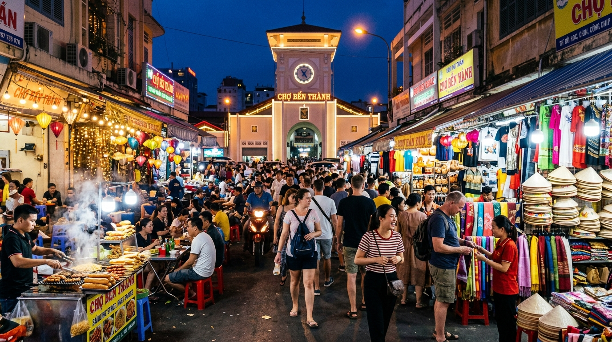
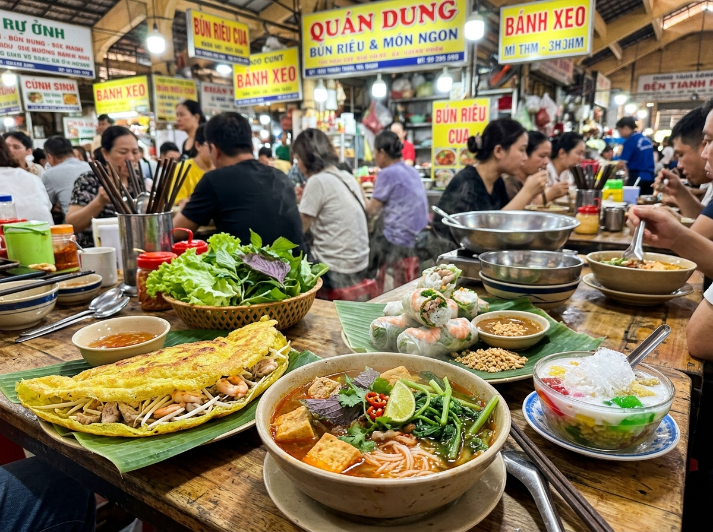
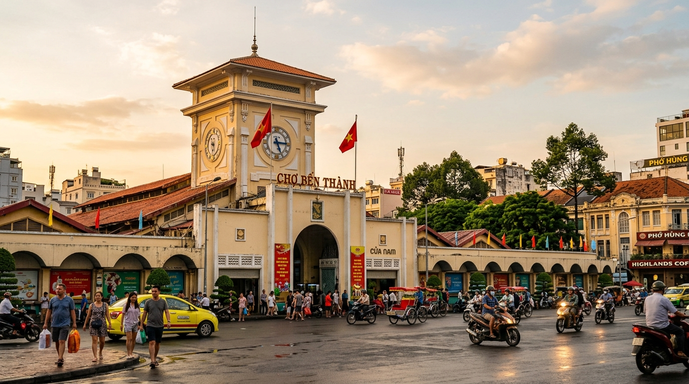
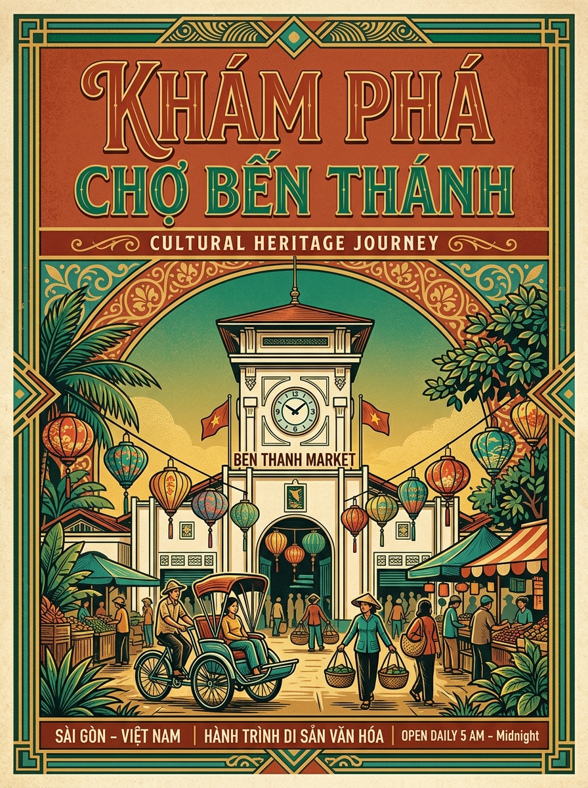

Chợ Ngày
Chợ Ngày
Dạo Sớm Sạp Vải & Đồ Thủ Công
Khám phá các gian hàng áo dài, tơ lụa tơ tằm Nam Bộ và sản phẩm mây tre đan tinh xảo ngay khi chợ vừa mở cửa đón ánh nắng mai.
Nếu như Chợ ngày (06:00 – 18:00) là trung tâm mua bán sầm uất với hơn 1.400 sạp hàng phong phú từ vải vóc, đồ gốm, đồ khô truyền thống đến khu ăn uống gia truyền, thì Chợ đêm Bến Thành (18:00 – 23:00) lại là một lễ hội đường phố đầy mê hoặc của đèn lồng rực rỡ, khói nướng thơm lừng và dòng người du khách quốc tế dạo bước thưởng ngoạn.
Sự tiếp nối nhịp nhàng này tạo nên một dòng chảy văn hóa liên tục, phản ánh chân thực bản tính năng động, cởi mở và hiếu khách của người dân Thành phố mang tên Bác.

Chợ Ngày
Khám phá các gian hàng áo dài, tơ lụa tơ tằm Nam Bộ và sản phẩm mây tre đan tinh xảo ngay khi chợ vừa mở cửa đón ánh nắng mai.

Ẩm ThựcTrải nghiệm ngồi trên những dãy bàn gỗ truyền thống thưởng thức tô bún riêu cua thơm lừng và ly chè ngũ sắc ngọt mát đúng điệu Sài Thành.

Mua SắmTự tay nếm thử và đóng gói cà phê Arabica Cầu Đất, trà ướp sen Tây Hồ và các loại hạt điều sấy khô chuẩn bị làm quà biếu phương xa.
Hai dãy phố Phan Bội Châu và Phan Chu Trinh biến thành phố đi bộ nhộn nhịp, lung linh ánh đèn và tiếng cười nói của khách du lịch năm châu.
Thưởng thức tôm sú nướng muối ớt cay nồng, sò điệp nướng mỡ hành thơm nức cùng bạn bè trong làn gió đêm mát lành của trung tâm quận 1.

Mua SắmLựa chọn những chiếc áo thun in hình tháp đồng hồ, móc khóa gỗ khắc tay, nón lá trang trí và bưu thiếp Sài Gòn xưa làm kỷ niệm đáng nhớ.
Tiếp tục tìm hiểu nét đẹp văn hóa ứng xử của các tiểu thương:
Khám Phá Văn Hóa Mua Sắm & Mặc Cả →